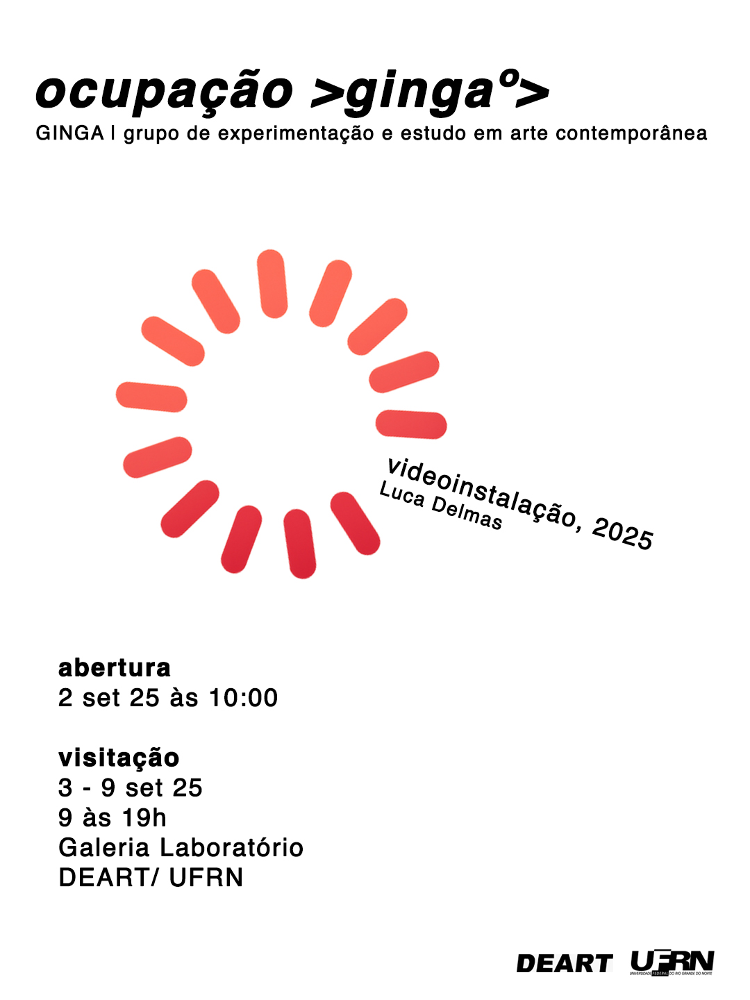
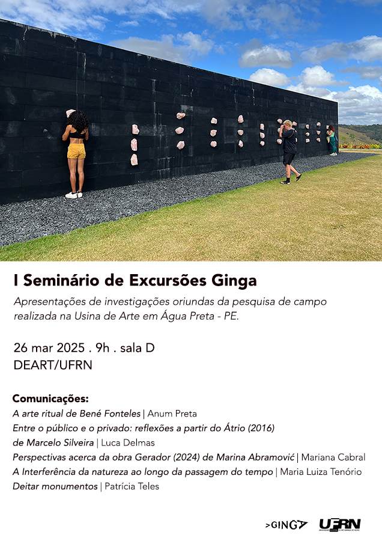

> ocupações º>
2025 - II Seminário de Excursões Ginga: ART.PE
Seminário previsto para o dia 5 dez 25.
2025 - Ginga.mp4: Videoinstalação (2025), Luca Delmas
Videoinstalação (2025) de Luca Delmas faz parte do projeto de pesquisa Ginga.mp4: o vídeo em relação com o corpo e o espaço.
2025 - I Seminário de Excursões Ginga: Usina de Arte
Apresentações de investigações oriundas da pesquisa de campo realizada na Usina de Arte em Água Preta - PE.
> comunicações º>
A arte ritual de Bené Fonteles
Anum Preta
O trabalho investiga a poética dos Orixás presente na obra Tempo Templo, Tempo Templo
(2018), de Bené Fonteles. Para tanto, pensa o ritual como método de criação artística, as
ações simbólicas e performativas articuladas para criar conexão com o mundo espiritual
através da arte.
Entre o público e o privado: reflexões a partir do Átrio (2016) de Marcelo Silveira
Luca Delmas
Uma introdução à obra de Marcelo Silveira pensando nas relações pessoais e materiais,
refletindo a reprodução como acesso ao espaço privado na Usina de Arte. A partir da vivência
pessoal expõe-se reflexões sensoriais de tempo e espaço enquanto imerso na obra.
Perspectivas acerca da obra Gerador (2024) de Marina Abramović
Mariana Cabral
Trata-se de uma introdução à obra Gerador (2024), de Marina Abramovic, analisando como o
trabalho se conecta com o espaço, o espectador e a subjetividade. Discorre tanto sobre o
caráter formal do site-specific, como apresenta uma reflexão pessoal sobre conexão, natureza
e tempo.
A Interferência da Natureza ao longo da passagem do Tempo
Maria Luiza Tenório
Uma análise que investiga como a natureza interfere no corpo da obra, seja de forma
intencional ou acidental. Além disso, observa a passagem do tempo e a impossibilidade de
controlá-lo, assim como a importância do local onde a obra está inserida e seu impacto na
experiência do observador. Essas questões são exploradas no trabalho Eremitério Tropical (2015) de Márcio Almeida.
Deitar monumentos
Patrícia Teles
A comunicação aborda trabalhos de artistas latino-americanos que exploram a poética do
anti-monumento. São eles: Tinha que acontecer (cabeça de bandeira) (2016) de Flávio
Cerqueira, exposto permanentemente no lago da Usina de Arte, em Pernambuco; Descanso do
artista colombiano Iván Argote, exibido na Bienal de Veneza (2024), Obelisco acostado (1978)
de Marta Minujín, entre outros trabalhos da artista argentina.